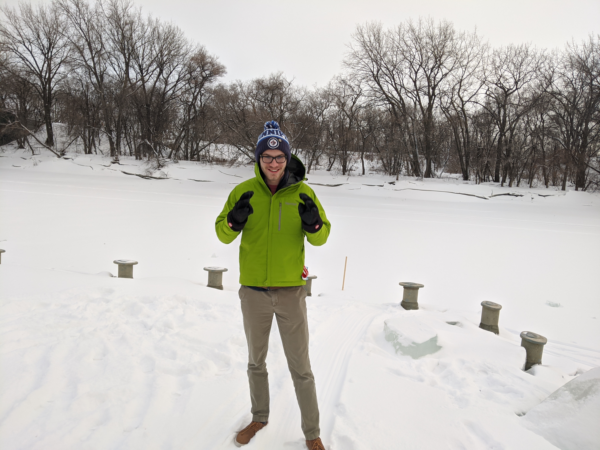

I create memorable experiences for the web. I am a User Experience Developer devoted to combing user centric design, and world class development.
I am a inter disciplanry designer and developer motivated and briding the disconnect between design and development. As a graduate of the University of Minnesota Full Stack Web Development Bootcamp, and graduate of the University of Wisconsin Eau Claire with a B.S. in Graphic Communications, I have a unique set of skills allowing me to take a project from ideation through execution.
In todays fast moving tech focused world, time is of the essence. Often you do not have time to wait for months for a designer to create the mockups and then another 4 months for development, and who knows how long for revisions. I am able to take your idea from the design phase through a minimally viable product.